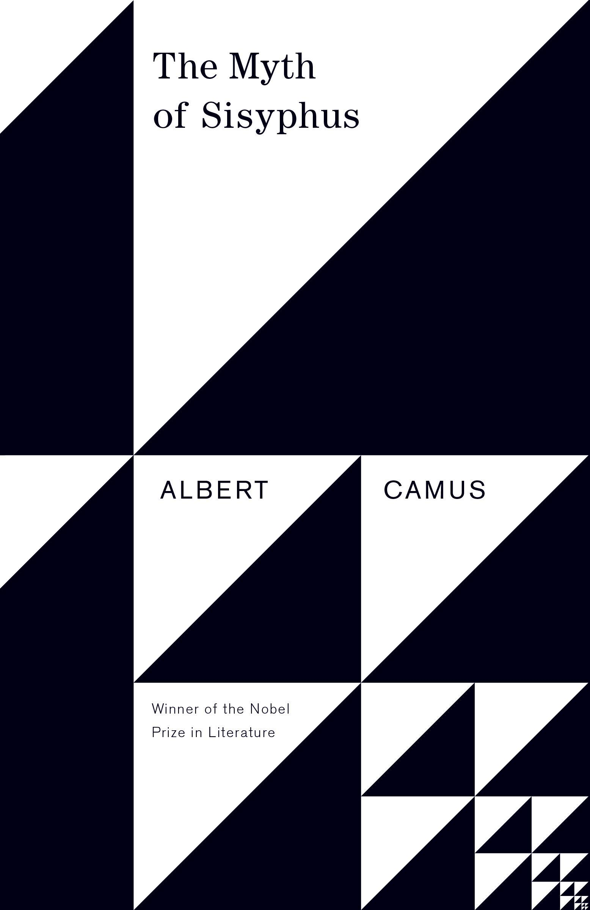
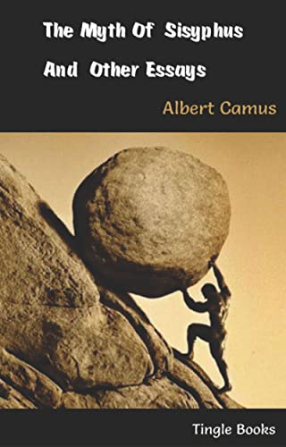

<!---RMIT University Vietnam
  Course: COSC2430 Web Programming
  Semester: 2023
  Assessment: Assignment 1 - Static Website
  Author: Pham Minh Quang
  ID: S3978814
  Acknowledgement: Book Detail Page--->
<!DOCTYPE html>
<html>
<head>
    <title>Book Details Page</title>
    <meta name="viewport" content="width=device-width, initial-scale=1">
</head>
</html>
<meta name="viewport" content="width=device-width, initial-scale=1">
  <link rel="stylesheet" type="text/css" href="booksdetail.css">
  <link rel="stylesheet" href="https://cdn.jsdelivr.net/npm/@fortawesome/fontawesome-free@6.2.1/css/fontawesome.min.css">

</head>
<body>
    <section class="header">
        <nav>
            <a href="index.html">
            </a>
            <div class="nav-links" id="navLinks">
                <i class="fa-solid fa-x" onclick="hideMenu()"></i>
                <ul>
                    <li><a href="index.html">HOME</a></li>
                    <li><a href="best.html">BESTSELLERS</a></li>
                    <li><a href="philoshophy.html">PHILOSOPHY</a></li>
                    <li><a href="neuroscience.html">NEUROSCIENCE</a></li>
                    <li><a href="contact.html">CONTACT</a></li>
                </ul>
                
            </div>
            <i class="fa-solid fa-x" onclick="showMenu()"></i>
        </nav>
        </section>
        <!---JavaScript--->
<script>
            var navLinks = document.getElementById("navLinks");
            function showMenu(){
                navLinks.style.right = "0";
            }
            function hideMenu(){
                navLinks.style.right = "-200px";
            }
</script>
<section class="det">
    <h2><a href="index.html">Home</a> > <a href="philoshophy.html">Philoshophy</a>> The Myth of Sisyphus </h2>
    <div class="desc">
        <div class="imga">
            
        </div>
        <div class="timg">
            
            
            
            
        </div>
        
       
        
    </div>
    <div class="money">
        <h1>$20</h1>
    </div>
    <button class="button">Purchase</button>
    <h1>The Myth of Sisyphus</h1>
    <p>
        The Myth of Sisyphus, philosophical essay by Albert Camus, published in French in 1942 as Le Mythe de Sisyphe. Published in the same year as Camus’s novel L’Étranger (The Stranger), The Myth of Sisyphus contains a sympathetic analysis of contemporary nihilism and touches on the nature of the absurd. Together the two works established his reputation, and they are often seen as thematically complementary.
    </p>
    <p>
        Influenced by the philosophers Søren Kierkegaard, Arthur Schopenhauer, and Friedrich Nietzsche, Camus argues that life is essentially meaningless, although humans continue to try to impose order on existence and to look for answers to unanswerable questions. Camus uses the Greek legend of Sisyphus, who is condemned by the gods for eternity to repeatedly roll a boulder up a hill only to have it roll down again once he got it to the top, as a metaphor for the individual’s persistent struggle against the essential absurdity of life. According to Camus, the first step an individual must take is to accept the fact of this absurdity. If, as for Sisyphus, suicide is not a possible response, the only alternative is to rebel by rejoicing in the act of rolling the boulder up the hill. Camus further argues that with the joyful acceptance of the struggle against defeat, the individual gains definition and identity.
    </p>
    <p>
        Throughout history, some books have changed the world. They have transformed the way we see ourselves—and each other. They have inspired debate, dissent, war and revolution. They have enlightened, outraged, provoked and comforted. They have enriched lives—and destroyed them. Now Penguin brings you the works of the great thinkers, pioneers, radicals and visionaries whose ideas shook civilization and helped make us who we are. Inspired by the myth of a man condemned to ceaselessly push a rock up a mountain and watch it roll back to the valley below, The Myth of Sisyphus transformed twentieth-century philosophy with its impassioned argument for the value of life in a world without religious meaning.
    </p><br>
</section>

</body>
<footer>
    <nav>
        
        <div class="footer-nav-links">
    
            <a href="about.html">ABOUT US</a>
            <a href="privacy.html">PRIVACY POLICY</a>
            <a href="terms.html">TERMS OF USE</a>
            <a href="contact.html">CONTACT US</a>
            
        </div>
    </nav>

</footer>
</html>